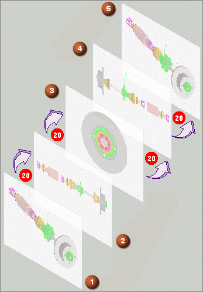

关键帧轨迹方法基于围绕模型的一系列摄像机位置来创建轨迹。
称为关键帧的高质量图像从这些摄像机位置进行渲染
NX 对关键帧之间的位置进行插补，并为动画生成中间帧
创建关键帧轨迹时，会创建初始关键帧 Frame0。
不能删除或移动 Frame0，但是可以对其重命名
Frame0 的过渡因子被忽略，并且它的帧数将始终计为零。两个关键帧之间的步数必须始终为零，因为没有前帧
下图显示的三个标准视图用于定义在各帧之间具有 20 个中间步骤的三个关键帧，注意第一个和最后一个视图是一样的。

可以控制以下参数：
查看位置
关键帧数
两个关键帧之间的步数(或帧数)
帧之间插值轨迹的光顺性